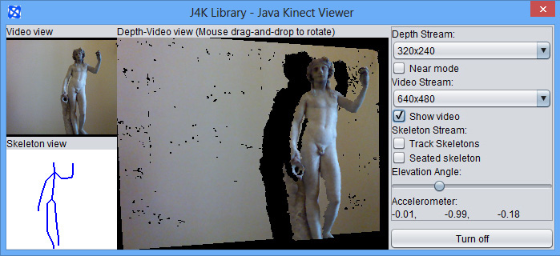
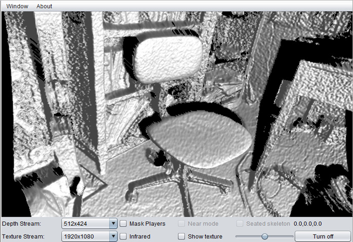
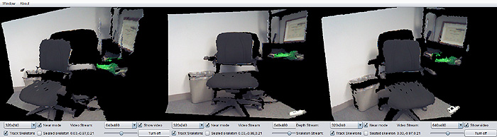

UFDW Java library
J4K Java library
J4KSDK.class API
DepthMap.class API
Skeleton.class API
VideoFrame.class API
Source Code Examples
SimpleExample
VideoViewerApp
KinectViewerApp
AugmentedRealityApp
ImageAvatarApp
XEDConvertApp
MultipleKinectApp
J4K Projects Gallery
Published Papers
Download
Install in Eclipse
Watch video tutorial
People
Frequently Asked Questions
J4K Java library
J4KSDK.class API
DepthMap.class API
Skeleton.class API
VideoFrame.class API
Source Code Examples
SimpleExample
VideoViewerApp
KinectViewerApp
AugmentedRealityApp
ImageAvatarApp
XEDConvertApp
MultipleKinectApp
J4K Projects Gallery
Published Papers
Download
Install in Eclipse
Watch video tutorial
People
Frequently Asked Questions
J4K Java Library
The J4K library is a popular open source Java library that implements a Java binding for the Microsoft's Kinect SDK. It communicates with a native Windows library, which handles the depth, color, infrared, and skeleton streams of the Kinect using the Java Native Interface (JNI).
The J4K library is compatible with all kinect devices (Kinect for Windows, Kinect for XBOX, new Kinect, or Kinect 2) and allows you to control multiple sensors of any type from a single application, as long as your system capabilities permit. For example you can control three Kinect 1 sensors, or one Kinect 1 and one Kinect 2 connected via USB 3.0 to the same computer. Furthermore, the J4K library contains several convenient Java classes that convert the packed depth frames, skeleton frames, and color frames received by a Kinect sensor into easy-to-use Java objects.
Optionally, you can use JogAmp's JOGL Java library to visualize the Kinect data as 3D textured surfaces in openGL (for more technical details you can read IEEE Transactions on Cybernetics, 2013, or watch the VIDEO DEMO). The use of JOGL library is optional, and is not required if you don't use the drawing methods provided in the J4K Java classes.
This is a screenshot of the Kinect Viewer dialog window, which is included in the J4K Java library and offers an easy way to view the current data and a simple, graphical user interface for changing the parameters of the sensor.

The screenshot below shows a 3D visualization of the Kinect depth stream. More info...

An example of visualizing the Kinect data as 3D textured surfaces in openGL is shown below. More info...

The J4K library is included in the University of Florida Digital Worlds (ufdw.jar) Java library. This library was developed by Prof. Angelos Barmpoutis, and further extended by the students and faculty who work in the SAGE program (Serious and Applied Gaming Environments) at the University of Florida Digital Worlds Institute. You can find more information about how to join our graduate and undergraduate programs at this link (www.digitalworlds.ufl.edu).
If you use this Java library in your research, please cite the following article, which introduced this library:
A. Barmpoutis. 'Tensor Body: Real-time Reconstruction of the Human Body and Avatar Synthesis from RGB-D', IEEE Transactions on Cybernetics, Special issue on Computer Vision for RGB-D Sensors: Kinect and Its Applications, October 2013, Vol. 43(5), Pages: 1347-1356. Download PDF - Kinect Avatars paper [VIDEO DEMO]
Where to begin?
Statistics
By using the J4K Java library for Kinect you join a community of thousands active users from more than 50 countries worldwide ranked by the number of J4K users as follows: USA (26%), Germany (10%), Mexico, Brazil, Italy, France (5%), UK, Japan, Poland (3%), Canada, India, Australia (2%), Switzerland, Argentina, Netherlands, South Africa, Turkey, Greece, New Zealand, Indonesia, Slovakia (1%), Portugal, Austria, Spain, Zimbabwe, Sweden, Morocco, Iran, Belgium, Bulgaria, Taiwan, Russia, Norway, Croatia, Czech, Ukraine, Singapore, Romania, Luxembourg, Israel, Lithuania, Hong Kong, Finland, Uruguay, Thailand, Serbia, Ghana, Philippines, South Korea, Bahrain, Paraguay, Pakistan, Ireland, Estonia, and Cyprus. (Based on non-Git installations of the J4K library in the period November 2013 - November 2014.)
Disclaimer: The names JAVA and KINECT and their associated logos are trademarks of their respective copyright owners Oracle and Microsoft. None of these companies endorse, fund, or are in any way associated with the J4K library.
Disclaimer: This software is provided for free without any warranty expressed or implied for academic, research, and strictly non commercial purposes only. By downloading this library you accept the Terms and Conditions.